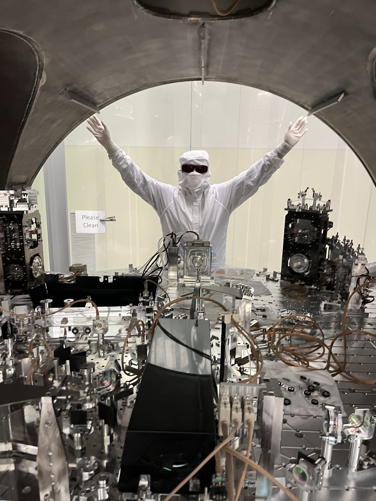

Hello! I'm a second-year Ph.D. student in Physics at the University of California, Berkeley, working with Dr. Victoria Xu in the Q-IFO Lab for Quantum Sensing & Interferometry.
My research focuses on quantum noise reduction techniques for next-generation gravitational wave detectors — specifically, using cavity QED to explore improved geometries for optical parametric amplifiers. I'm also a member of the LIGO Scientific Collaboration.
Before Berkeley I got my B.S. in Physics from RPI in 2023, where I also did high-energy physics analysis with ATLAS and a semester as a visiting researcher at TU Dresden.
Interactive Squeeze @ LIGO
An interactive GUI for visualizing noise spectra and frequency-dependent squeezing in the LIGO detectors. Models optical loss, phase noise, and cavity parameters to optimize detector sensitivity.
Optical Parametric Amplifier Simulations
Investigating field behavior in cavities with complex geometry, how to represent losses, and optimizing cavity parameters to maximize squeezed light generation.
Squeezed Light @ Berkeley
Using Boyd-Kleinman theory and exact OPA formalism to jointly optimize crystal length, input coupler transmissivity, pump beam waist, and bowtie cavity geometry for the Berkeley squeezer.
Interactive Squeeze @ LIGO
An interactive GUI for visualizing noise spectra and frequency-dependent squeezing in the LIGO detectors. Models optical loss, phase noise, and cavity parameters to optimize detector sensitivity.
Optical Parametric Amplifier Simulations
Investigating field behavior in cavities with complex geometry, how to represent losses, and optimizing cavity parameters to maximize squeezed light generation.
Squeezed Light @ Berkeley
Using Boyd-Kleinman theory and exact OPA formalism to jointly optimize crystal length, input coupler transmissivity, pump beam waist, and bowtie cavity geometry for the Berkeley squeezer.
AMO physics
- Member of the LIGO Scientific Collaboration developing technologies for broadband, tunable, and robust frequency-dependent squeezing.
- Built an interactive GUI for exploring optical loss, phase noise, and frequency-dependent effects in LIGO detector systems.
Nuclear physics
- Contributed to silicon vertex detector development for the Electron-Ion Collider (EIC).
- Conducted air cooling studies for the ePIC Silicon Vertex Tracker.
- Performed thermal analysis and optimization of detector cooling systems.
High-Energy physics
- Extended the CERN ATLAS Open Data tool with new fitting functions and machine learning methods via Jupyter notebook.
- Wrote task sheets and documentation for a masters-level laboratory course on computational methods for proton-proton collision analysis.
Advisor: Dr. Victoria Xu
Mentored undergraduates from underrepresented backgrounds in mathematics and the physical sciences through the MPS Scholars program.
Guided undergraduates through independent reading projects in physics beyond the standard curriculum.
Led the campus chapter promoting inclusion and community for women and gender minorities in physics. Organized speaker series, mentorship programs, and outreach events.
Developed curriculum and project goals for a high school student completing a Z-boson invariant mass analysis using ATLAS Open Data.
conference presentations
Nadia Trinkala Service Award
Awarded to a physics student who has made significant contributions to the RPI community and the City of Troy. Recognized for leadership as Women+ in Physics Chapter President and sustained commitment to inclusion in the physical sciences.
- LIGO Scientific Collaboration
- Society of Women in Physics
graduate student instructor — uc berkeley
Discussion section instructor for an introductory physics course for non-majors. Designed activities and lecture slides spanning quantum entanglement to nuclear fusion, with an emphasis on scientific literacy.
Discussion section and lab instructor for calculus-based mechanics. Topics: kinematics, dynamics, energy, momentum, rotational motion, and oscillations.
Always happy to discuss research, potential collaborations, or opportunities.
| katiegray@berkeley.edu | |
| office | Birge Hall, Room 275 |
| address | Department of Physics University of California, Berkeley Berkeley, CA 94720 |
| github | @katiegrayy |
| katie gray | |
| hours | by appointment — email to schedule |